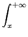

suivant: La fonction : Gamma
monter: Les réels
précédent: La fonction erf :
Table des matières
Index
La fonction erfc : erfc
erfc a comme argument un nombre a.
erfc calcule les valeurs de la fonction erfc au point a.
On a par définition :
erfc(
x) =


e-t2dt = 1 -
erf (
x)
On a :
erfc(0) = 1
erfc() = - 1
En effet on sait que :
 e-t2dt
e-t2dt =

On tape :
erfc(1)
On obtient :
0.15729920705
On tape :
1- erfc(1/(sqrt(2)))*1/2
On obtient :
0.841344746069
Remarque
Il y a une relation entre les fonctions erfc et normal_cdf :
normal_cdf
(x) = 1 -  &sstarf#star;erfc
(
&sstarf#star;erfc
( )
)
En effet :
normal_cdf
(x) = + 
 e-t2/2dt
e-t2/2dt
donc avec le changement de variables
t = u*
normal_cdf
(x) = + 
 e-u2du = 1 - &sstarf#star;erfc
()
e-u2du = 1 - &sstarf#star;erfc
()
On vérifie en tapant :
normal_cdf(1)=0.841344746069
Documentation de giac écrite par Renée De Graeve